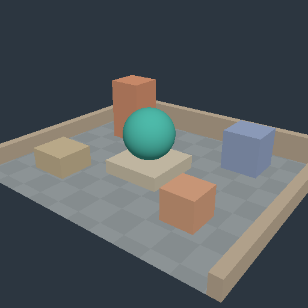

001 · プロシージャル中庭
床・囲い・箱・台座・UV sphere を組み合わせ、頂点属性・カメラ・深度・法線と光の関係を確認する基準シーンです。
結論
共有パイプラインで実メッシュを描画し、オフスクリーンで GPU readback を確認しました。実行に使った adapter は、CPU で描画するソフトウェアラスタライザーの Mesa llvmpipe です。ハードウェア GPU の性能や、ブラウザー UI の動作を検証した結果ではありません。

512 × 512 の GPU readback を PNG に変換した画像です。ブラウザーやネイティブウィンドウのスクリーンショットではありません。
実装
CPU で生成した 1,221 vertices / 1,938 triangles を使います。外部のモデルやテクスチャは使っていません。深度形式は Depth32Float で、Lambert lighting と固定カメラの透視投影を使います。
uniform は 80-byte で、先頭 16 bytes は既存の fullscreen 実験と互換性があります。中庭・解析球・色のパイプラインを、同じ depth pass で切り替えて検証しました。
対象と実行条件
対象コードの commit は bcb259e6e5a8ebc9d11f132987a9a1e502c46010 です。
- Rust 1.99.0 / wgpu 30.0.1 / wasm-bindgen 0.2.129 を使いました。
- adapter は llvmpipe (LLVM 19.1.7, 256 bits)、backend は GL、device type は CPU です。
- driver info は 4.5 (Core Profile) Mesa 25.0.7-2+deb13u1 です。
- オフスクリーンの寸法は 512 × 512、時刻は 0 秒、色形式は Rgba8UnormSrgb です。
- 元ログにタイムスタンプがないため、実行日時は記録されていません。
確認済み
- Rust の単体テストは 10 件成功しました。通常の workspace test では、GPU テストは ignored として実行を省略します。
- JavaScript の状態管理テストは 12 件成功しました。
- ネイティブの workspace check、WASM の target check、WASM の release build は成功しました。
- Rust の format 検査と JavaScript の構文検査は成功しました。
- 明示的に有効化する courtyard GPU test は 1 件成功しました。262,144 pixels が不透明であること、描画が一様色ではないこと、複数の材質領域があることを確認しました。
- 不正な WGSL と頂点属性の不一致を拒否し、有効なパイプラインでは描画できることを確認しました。
これは既存の実行ログをまとめた記録です。このレポートの生成時にレンダラーの検証を再実行したものではありません。
未検証・未計測
- ブラウザー内の WebGPU、A/B UI、DOM 操作、PNG ダウンロードは未検証です。
- ネイティブのウィンドウとイベントループ、surface の一連の動作は未検証です。
- ハードウェア GPU での動作、GPU 間の画素一致、長時間の安定性は未検証です。
- FPS、GPU のフレーム時間、画質の比較指標は未計測です。比較実験や性能測定はまだ実施していません。
- GitHub Actions の実行結果はこの記録に含みません。
この測定時点では、glTF、PBR、shadow、FlightHelmet、Sponza は未実装でした。
再現コマンド
cargo test --locked --workspace
node --test web/state.test.mjs
cargo check --locked --target wasm32-unknown-unknown -p rendering-web
bash scripts/build-web.sh
RENDERING_LAB_COURTYARD_PPM=courtyard.ppm cargo test --locked -p rendering-core --test courtyard_smoke -- --ignored --nocaptureソースは別の非公開リポジトリで管理しています。アクセス権がある場合は、対象 commit を checkout し、Rust と WASM のツールチェーンを用意して実行します。この公開サイトには実行用のソースは含まれません。
GPU テストには、動作するネイティブの graphics adapter が必要です。上記コマンドの PPM 出力は、PNG と同じ画素を持つ元の画像形式です。
次に確認すること
実機ブラウザーで初期表示、実験の切り替え、無効な WGSL を入力した後の描画保持、reload の連打、リサイズ、停止時の PNG 保存を確認します。その後、同じカメラと解像度で一つずつ描画手法を比較します。